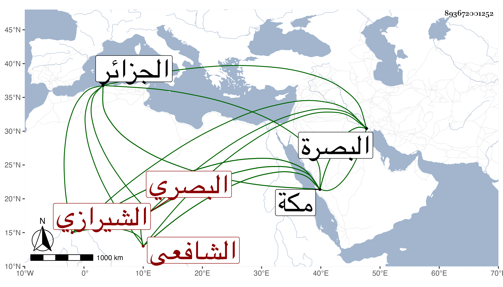

0902Sakhawi.DawLamic.ITO20230111-ara1.EIS1600.893672001252
Biography ID: 893672001252
111
عبد الله بن عبد الواحد بن محمد بن زيد جمال الدين بن زكي الدين الشيرازي الأصل البصري الشافعي نزيل مكة ويعرف فيها بالشيخ عبد الله البصري . ولد في سنة تسع عشرة وثمانمائة بالبصرة ونشأ بها فقرأ القرآن لعاصم على إبراهيم ابن محمد بن أحمد بن زقزق وحفظ الحاوي ومختصر الملحة المسمى الجواهر للشيخ يوسف الواسطي ونحو ثلثي الكافية والفن الأول من تلخيص المفتاح واشتغل بها فقرأ على أحمد بن الحاج علي بن حذيفة البصري من أول المعتمد في الفقه إلى الإقرار وعلى محمد بن إبراهيم بن زقزق البصري جانبا من الحاوي ومختصر الملحة وارتحل إلى بلاد الجزائر فقرأ بها على ملا علي التستري جانبا من البخاري وأجاز له وعلى محمد بن صالح بن شريف كرغيف الحاوي وعنه أخذ الفرائض والحساب ، وحج في سنة ثمان وأربعين وأقام بمكة السنة التي تليها ثم عاد لبلاده في التي بعدها فدام بها إلى أن امتحن مع الشعشاع الخارجي في سنة ثلاث وستين ففر منه إلى مكة فقدمها في خامس رجب من التي تليها وعكف على البرهاني قاضيها فبحث عليه المنهاج والحاوي بقراءته مرتين بل وقرأ عليه الصحيح والشفا في الأشهر الثلاثة عدة سنين وكان إماما فاضلا مفننا عاقلا ساكنا تام المعرفة بالفرائض والحساب والعروض ذا نظم كثير حسن مشاركا في الفقه والعربية مستمرا لحفظ الحاوي صنف فتح الرحمن في مسألة دور الضمان في كراريس وأقرأ الطلبة وربما كتب على الفتوى ، واستقر في مشيخة رباطي الشريفين حسن وبركات ، وتنزل في الزمامية والجمالية مع مباشرتها والسلطانية وغير ذلك سالكا في أمره كله طريق الاستقامة بحيث بلغني عن البرهاني أنه قال من حين صحبني ما نقمت عليه في دينه شيئا ، وقد كثر اجتماعي به في عدة مجاورات وعدته غير مرة وحمدت مخالطته ومبادرته لإكرام من يكون من جهتي بتنزيله في الرباط ولو لم يكن فيه فضل بحيث يقول نحن كلنا في بركة فلان والواجب علينا امتثال إشارته ، ولم يزل على طريقته حتى مات بعد تعلله مدة انقطع منها زيادة على ثلاث سنين لا يستطيع القيام وهو صابر محتسب مديم للتلاوة في ليلة السبت ثامن عشر صفر سنة ثلاث وتسعين وصلى عليه من الغد ثم دفن بالمعلاة وكثر الثناء عليه رحمه الله وإيانا ، ومن نظمه قصيدة رثى فيها الخطيب فخر الدين أبا بكر بن ظهيرة أولها :
| يا عين جودي بدمع منك منسجم | لفقد عين الكرام العالم العلم |
وكذا رأيت بخطه قصيدة يتشوق فيها إلى أهله وبلاده ويشير فيها لسبب مفارقتها فكان من أبياتها :
| هي البصرة الفيحاء لا زال ذكرها | جديدا لأهليها لدى الخلق إجلال |
| فقد كانت الفيحاء للعين نزهة | وللقلب جنات بها ينعم البال |
ومنها :
| فأهلا لأوقات مضت في سرورها | لنا من رغيد العيش فيهن أوصال |
| وترتيب أوراد وأفعال طاعة | وخدمة أعلام من العلم قد نالوا |
| وعين الردى والحادثات عمية | ودهري غفول والمبرات أنفال |
ومنها :
| ففارقتها بالرغم مني مخافة | على الدين من قوم بضد الهدى قالوا |
| بغوا وعتوا في الأرض واشتد وطؤهم | على أهلها والله ما شاء فعال |
| رماني لديهم ثم أنقذ منعما | على له بالعبد من وأفضال |
إلى آخرها .
